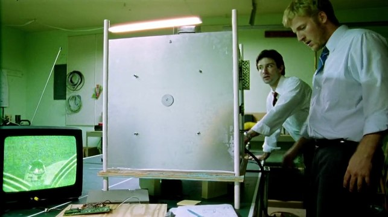

RETURN TO THE LOBBY
RETURN TO THE LOBBY
CREATOR :
Aaron & Abe
DATE CREATED :
Unknown
About The Box
The Box is an accidental time machine that was created by two engineers, Aaron and Abe while they were trying to build a device for reducing an object’s weight. It creates a localized temporal anomaly/loop.

ACTIVATE